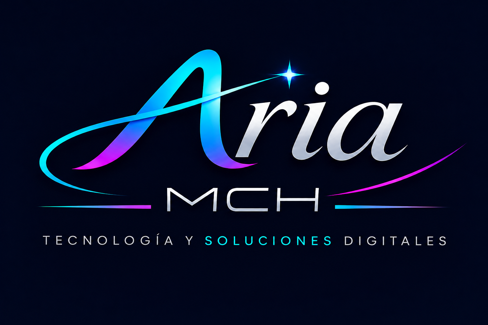

Desarrollo web
Sitio web institucional
Desarrollo y publicación de un sitio web institucional como proyecto de clase, utilizando Google Sites y metodología Scrum.
2024 Ver proyectoSoluciones digitales para personas, negocios y proyectos. Te ayudamos a resolver necesidades tecnológicas con claridad, responsabilidad y atención cercana.

Conoce las soluciones digitales que tenemos para ti.
MCH Aria es una iniciativa enfocada en ofrecer soluciones tecnológicas y digitales para personas y pequeños negocios.
Su propósito es facilitar el uso de la tecnología mediante servicios de software, asesorías digitales y desarrollo web, creando soluciones prácticas que respondan a necesidades reales.
Cada servicio y proyecto se desarrolla bajo valores que orientan nuestro trabajo y la relación con nuestros clientes.
Una muestra de soluciones tecnológicas desarrolladas para atender necesidades reales mediante el análisis, diseño y desarrollo de software.
Desarrollo y publicación de un sitio web institucional como proyecto de clase, utilizando Google Sites y metodología Scrum.
2024 Ver proyectoSistema de punto de venta desarrollado para Panadería El Molino, orientado a apoyar las operaciones comerciales y el control de inventario.
2023Desarrollo de una solución basada en aprendizaje profundo para la detección y seguimiento de ciclistas, enfocada en la seguridad de los usuarios vulnerables de la vía.
2018–2020 Consultar investigaciónAplicación móvil orientada al reconocimiento de plagas y enfermedades en cultivos de maíz.
2017–2018Próximamente encontrarás materiales, recomendaciones y recursos para facilitar el uso de herramientas digitales.

Explora este tutorial y descubre nuevas formas de aprovechar las herramientas digitales.
Ver tutorialInformación útil antes de solicitar un servicio.
No. MCH se especializa en servicios de software, configuración de programas y asesorías digitales. No ofrecemos reparación física de componentes.
Sí. El formateo consiste en reinstalar el sistema operativo de la laptop, mientras que la instalación de software consiste en instalar y configurar programas específicos. Pueden solicitarse por separado, según las necesidades del equipo.
No. Las asesorías se adaptan al nivel de conocimientos y necesidades de cada persona. El objetivo es facilitar el aprendizaje y ayudar a aprovechar mejor las herramientas digitales.
Puedes utilizar el formulario de contacto de nuestro sitio web. Cuéntanos qué necesitas y nos pondremos en contacto contigo para conocer más detalles y orientarte sobre el servicio.
Sí. Ofrecemos desarrollo de sitios web informativos y soluciones digitales que pueden ayudar a pequeños negocios a presentar sus servicios y tener presencia en internet.